Immigration Policy · Public Attitudes · European Social Survey · 2002–2020
An empirical analysis of the relationship between immigration policy restrictiveness and public attitudes across 30 countries — and the role of economic satisfaction in that relationship.
View Code on GitHubIntroduction
Immigration policy and public attitudes toward immigration are often discussed as though they move together — as though a more restrictive policy environment produces a more hostile public, or a more open one produces a more welcoming one. This analysis asks whether the data actually support that assumption, using two decades of survey evidence and immigration policy records from across Europe.
The analysis draws on the European Social Survey (ESS), Rounds 1–10 (2002–2020), covering 30 countries and nearly 400,000 native-born respondents, merged with the DEMIG Policy Database, which tracks immigration policy changes across Europe from 2000 to 2020. The central outcome is a composite immigration attitude score — a 0–10 index measuring how positively or negatively respondents view immigration on economic, cultural, and general dimensions.
The core research question: is there evidence of an association between the restrictiveness of a country's immigration policy environment and the immigration attitudes of its population? And does economic satisfaction — how people feel about their own financial situation — modify that relationship?
Note on causal inference: This is an observational study. The findings describe associations between variables and are consistent with certain interpretations, but they do not establish causal direction. Reverse causality — that public attitudes drive policy rather than the other way around — is a real possibility. Results should be read as empirical patterns in the data, not as evidence that policy causes attitude change.
The Data
The European Social Survey (ESS) has fielded comparable cross-national surveys every two years since 2002. This analysis uses Rounds 1–10 (2002–2020), restricted to native-born respondents, and merged with a country-level immigration policy panel. The immigration attitude composite averages three ESS items: imbgeco (economic effects), imueclt (cultural effects), and imwbcnt (general assessment), all on 0–10 scales where higher values indicate more positive attitudes toward immigration.
The DEMIG Policy Database (University of Oxford) records 4,929 restrictive or liberalizing immigration policy changes across 31 European countries from 1900–2020. Each change is coded for direction (restrictive or liberalizing) and salience (major or non-major). The policy variable used in regression models is the net restrictive score within a 2-year window before each ESS wave: the number of restrictive changes minus the number of liberalizing changes.
The analysis produces 233 country-year observations after merging. Country-year mean immigration attitude is 5.12 (SD = 0.77, range 2.87–7.30). Mean net restrictive score is −3.05 (SD = 8.54), indicating that the average country-year observation is modestly net liberalizing.
Economic dissatisfaction: Operationalized from the ESS household income adequacy question. Respondents reporting their income is "difficult" or "very difficult" to live on are coded as economically dissatisfied (46% of individual-level sample, N = 173,216). This captures subjective financial strain, not absolute income level.
The Findings, Part I
Before examining the policy relationship, the data reveal a robust individual-level pattern: economically dissatisfied respondents score lower on the immigration attitude index across every country, every ESS round, and every model specification tested.
The raw gap is 0.94 points on the 0–10 scale — economically satisfied respondents average 5.53 (SD = 1.98) versus 4.58 (SD = 2.23) for dissatisfied respondents. In regression models controlling for country fixed effects, year fixed effects, age, and years of education, the coefficient on economic dissatisfaction is approximately −0.72, statistically significant at p < 0.001 across all specifications.
Economic dissatisfaction is associated with a roughly 0.72-point reduction in immigration attitude scores (0–10 scale), holding country, year, age, and education constant (p < 0.001). This association is consistent across all model specifications.
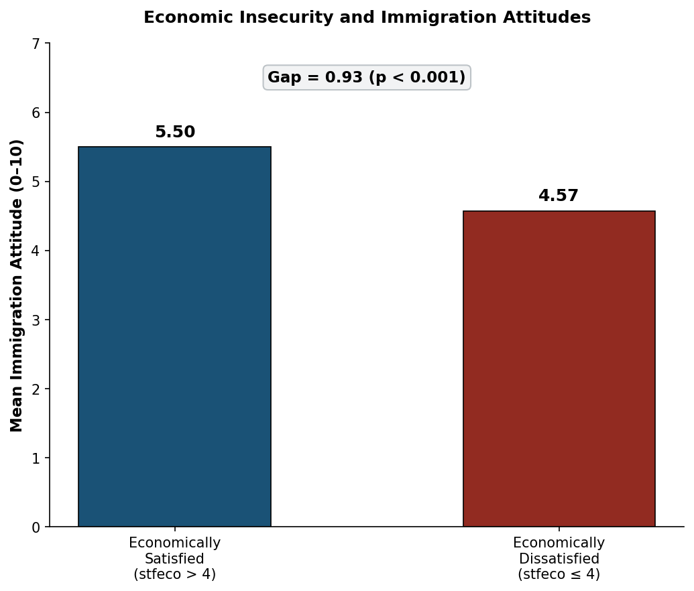
Country-level averages (pooled across all ESS rounds) show substantial variation. The three countries with the lowest mean attitudes are Greece (3.45), Cyprus (3.91), and Czechia (4.04). The three highest are Iceland (6.91), Sweden (6.15), and Luxembourg (6.02).
| Country | Mean Attitude (0–10) |
|---|---|
| 🇬🇷Greece | |
| 🇨🇾Cyprus | |
| 🇨🇿Czechia |
| Country | Mean Attitude (0–10) |
|---|---|
| 🇮🇸Iceland | |
| 🇸🇪Sweden | |
| 🇱🇺Luxembourg |
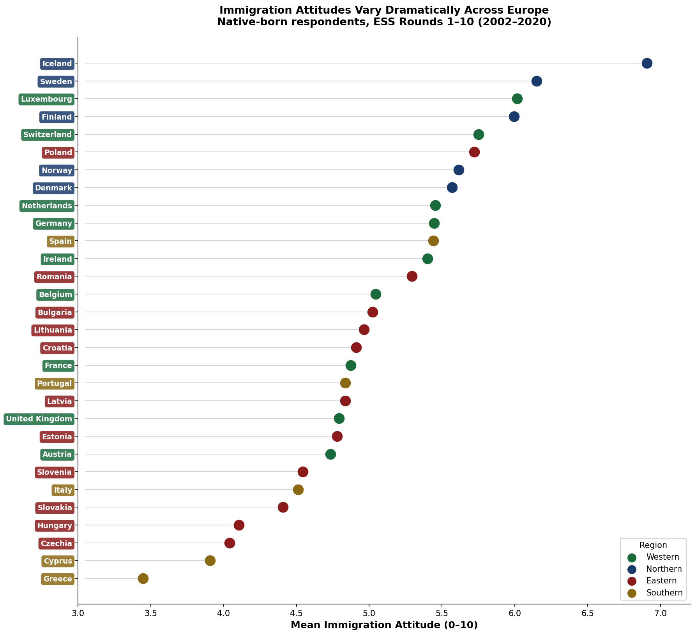
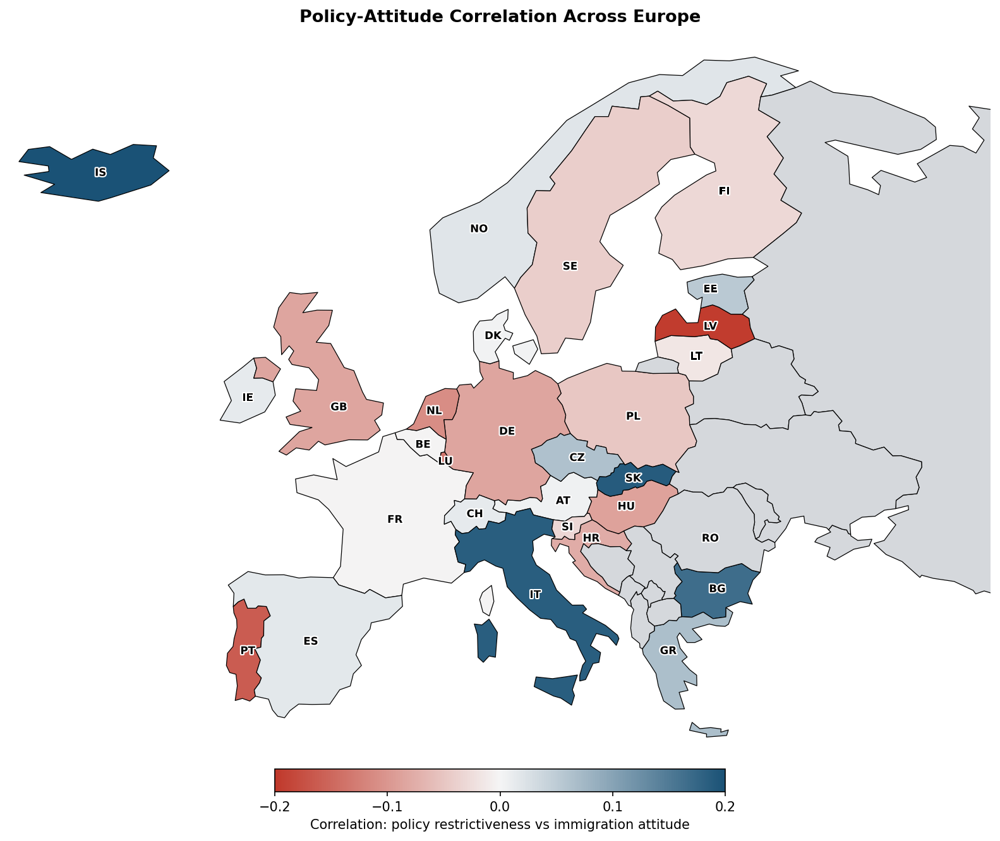
The country-level correlations between policy restrictiveness and attitudes are heterogeneous. Latvia (r = −0.196), Portugal (r = −0.162), and Luxembourg (r = −0.134) show the strongest negative associations. Bulgaria (r = 0.167), Italy (r = 0.185), Slovakia (r = 0.189), and Iceland (r = 0.201) show positive associations. Several countries — France (r = −0.002), Belgium (r = −0.002), Denmark (r = 0.004) — show near-zero relationships. The regional maps below show this variation in more detail.
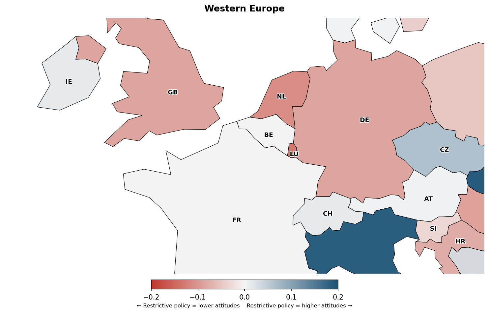
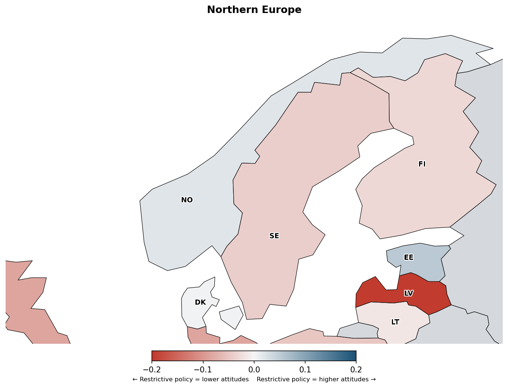
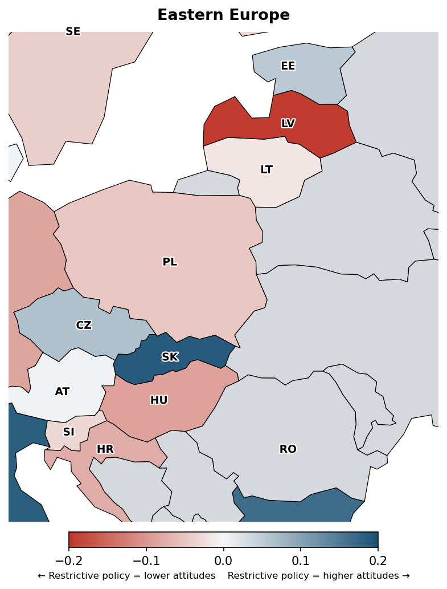
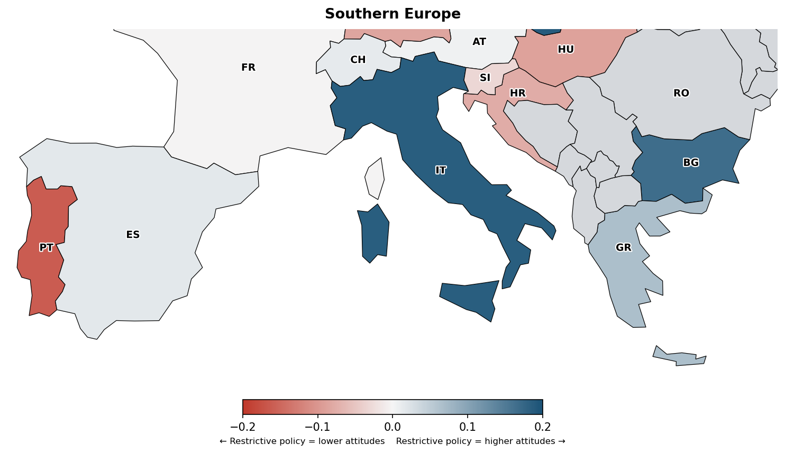
The Findings, Part II
The central regression model estimates the association between net policy restrictiveness (all changes) and individual immigration attitudes, controlling for country fixed effects, year fixed effects, age, and years of education, with standard errors clustered by country.
The coefficient on net restrictive policy is 0.003 (p = 0.940) — not statistically distinguishable from zero. There is no evidence in this specification that countries with more restrictive policy environments have systematically different immigration attitudes, after accounting for country and year fixed effects. The economic dissatisfaction coefficient remains stable at −0.720 (p < 0.001).
In the main specification using all policy changes, net policy restrictiveness shows no statistically significant association with immigration attitudes (coef = 0.003, p = 0.940). Economic dissatisfaction is consistently associated with lower attitudes (coef = −0.720, p < 0.001) across all models.
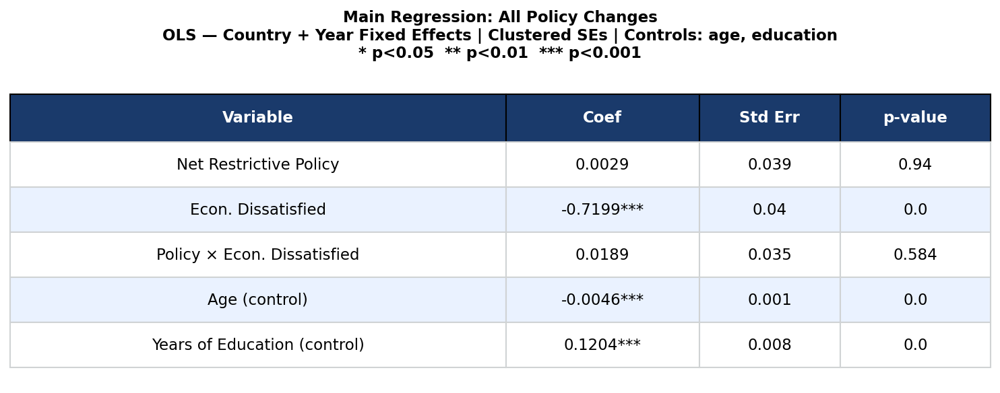
The non-major (routine) policy sub-analysis produces similar results: net non-major policy coefficient is −0.003 (p = 0.946), and the interaction between non-major policy and economic dissatisfaction is 0.045 (p = 0.244) — neither is statistically significant. The results are consistent across specifications: at the level of all or routine policy changes, there is no detectable association between policy restrictiveness and attitudes in these data.
The Findings, Part III
The DEMIG database distinguishes between routine policy adjustments and major policy changes — those coded as high-salience, landmark reforms. When the analysis is restricted to major changes only, a significant interaction emerges that does not appear in the all-policy or non-major specifications.
The main effect of major policy restrictiveness remains insignificant (coef = 0.018, p = 0.542). But the interaction between major policy restrictiveness and economic dissatisfaction is −0.094 (p < 0.001). This indicates that among economically dissatisfied respondents, a more restrictive major policy environment is associated with lower immigration attitudes relative to economically satisfied respondents. Among the satisfied group, the association between major policy restrictiveness and attitudes is not significant.
The interaction between major restrictive policy changes and economic dissatisfaction is statistically significant (coef = −0.094, p < 0.001). This interaction does not appear in the all-policy or non-major specifications, suggesting it is specific to high-salience policy changes.
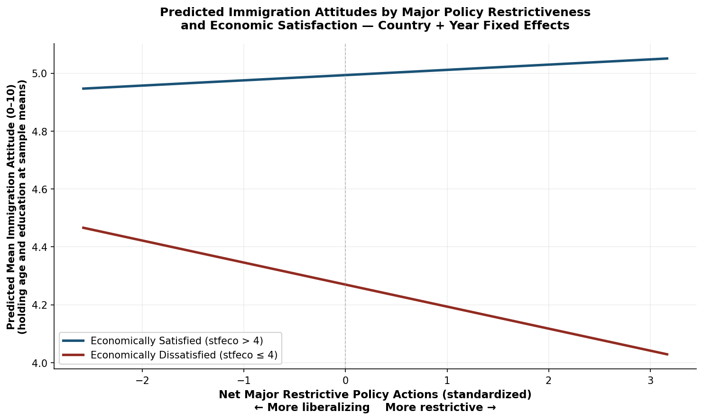
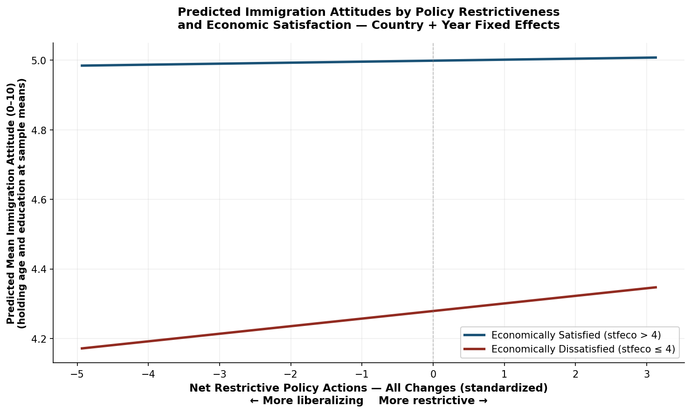
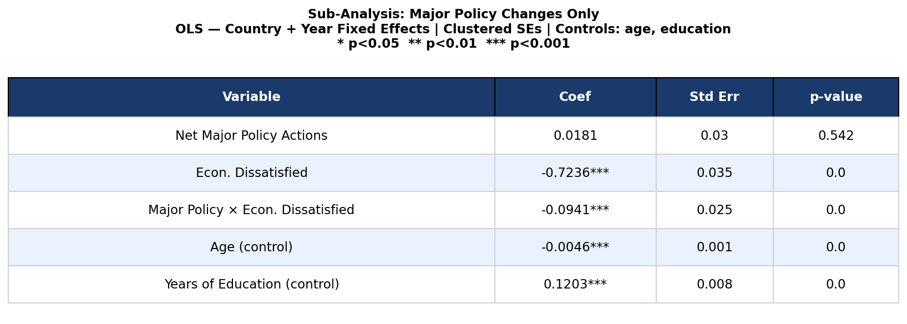
These results are consistent with the interpretation that major, high-salience policy changes may be more visible to the public and thus more likely to be associated with attitudinal patterns — particularly among those who are economically dissatisfied. However, given the observational design, this interpretation cannot be tested directly here. The direction of the association is also worth noting: among dissatisfied respondents, a more restrictive major policy environment is associated with lower immigration attitudes, not higher ones, which is contrary to a simple "reassurance" hypothesis.
"The interaction between major policy restrictiveness and economic dissatisfaction is the most substantively distinctive finding in the data — but it should be read as an empirical pattern, not a causal mechanism."
The Historical Picture
Setting aside regression results, the raw trends in policy and attitudes over the study period are informative on their own. Mean immigration attitudes across Europe have changed over time, and the composition of policy changes — particularly the shift in major policy from net liberalizing to net restrictive after 2016 — provides important context for interpreting the cross-sectional variation.
Early ESS rounds. Policy across most countries is net liberalizing in aggregate. Mean European immigration attitudes are in the moderate range (around 5.0–5.2).
Financial crisis period. Economically dissatisfied share of population rises across several countries. Mean attitudes show modest decline in the most affected economies.
Rising asylum applications across Europe. Policy environment begins shifting; major restrictive changes increase in frequency. Attitudes hold relatively stable in aggregate.
Net major policy restrictiveness turns positive for the first time in the data. Several large EU member states enact high-salience restrictive reforms.
Restrictive major policy momentum continues. Mean attitudes in ESS Round 10 (2020) remain broadly stable relative to earlier rounds at the European level.
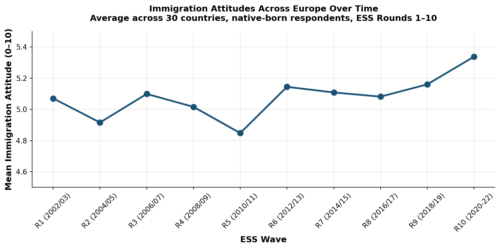
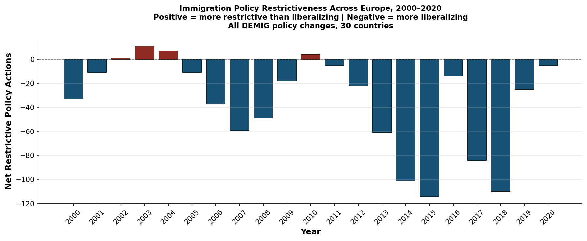
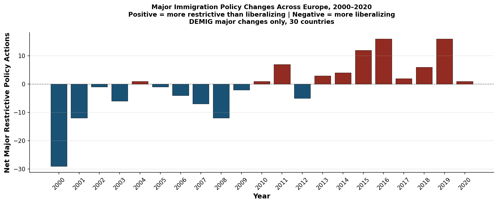
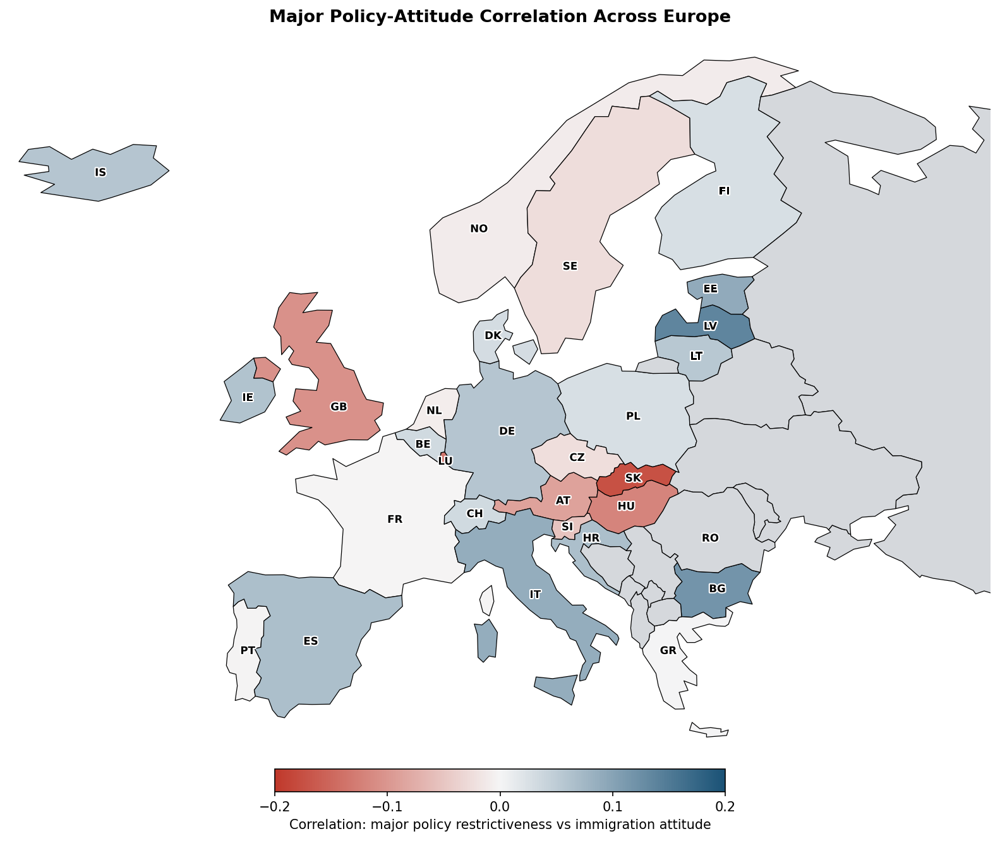
Conclusion
This analysis examined the association between immigration policy restrictiveness and public attitudes toward immigration across 30 European countries over two decades, using individual-level ESS data merged with a country-level DEMIG policy panel.
Three consistent patterns emerge from the data. First, economic dissatisfaction is robustly associated with lower immigration attitudes — a coefficient of approximately −0.72 on a 0–10 scale, significant at p < 0.001 across all model specifications, controlling for country and year fixed effects, age, and education. Second, in the main all-policy specification, net policy restrictiveness shows no statistically significant association with immigration attitudes (coef = 0.003, p = 0.940). Third, when analysis is restricted to major (high-salience) policy changes, a significant interaction emerges: among economically dissatisfied respondents, more restrictive major policy environments are associated with lower immigration attitudes (interaction coef = −0.094, p < 0.001), while no significant association is found among the economically satisfied group.
Economic dissatisfaction is consistently associated with lower immigration attitudes. Policy restrictiveness overall shows no significant association. The interaction between major policy changes and economic dissatisfaction is significant — but this pattern should be interpreted with caution given the observational design and the small number of major policy events per country.
Several limitations bear noting. The analysis is observational, so the direction of any relationship between policy and attitudes cannot be established — attitudes may influence policy as much as or more than policy influences attitudes. The country-year cell sizes for major policy changes are small, and clustering standard errors at the country level may not fully account for the non-independence of observations within country-round cells. The attitude composite treats three ESS items as interchangeable, which may obscure meaningful variation across economic, cultural, and general dimensions. Future work could extend this framework with panel data, quasi-experimental variation in policy, or decomposed attitude measures.
Data sources: European Social Survey (ESS) Rounds 1–10, 2002–2020; DEMIG Policy Database (University of Oxford). Sample: N = 392,865 native-born respondents after merging with policy panel; 233 country-year observations. Models: OLS with country and year fixed effects; SEs clustered by country; controls for age and years of education. Attitude composite: Mean of ESS items imbgeco, imueclt, imwbcnt (0–10). Policy variable: Net restrictive actions (restrictive minus liberalizing) in 2-year window before each ESS wave. Major policy: 836 changes coded as high-salience by DEMIG. Economic dissatisfaction: Binary indicator from ESS income adequacy question; 46% of sample (N = 173,216).